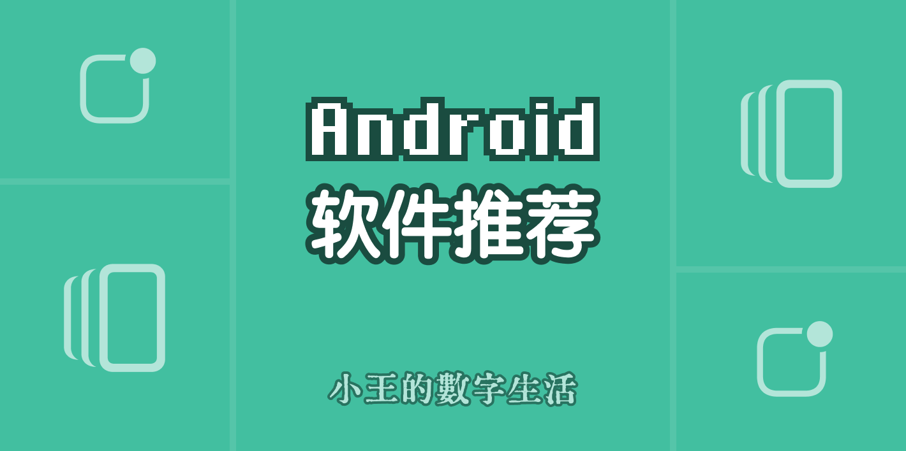
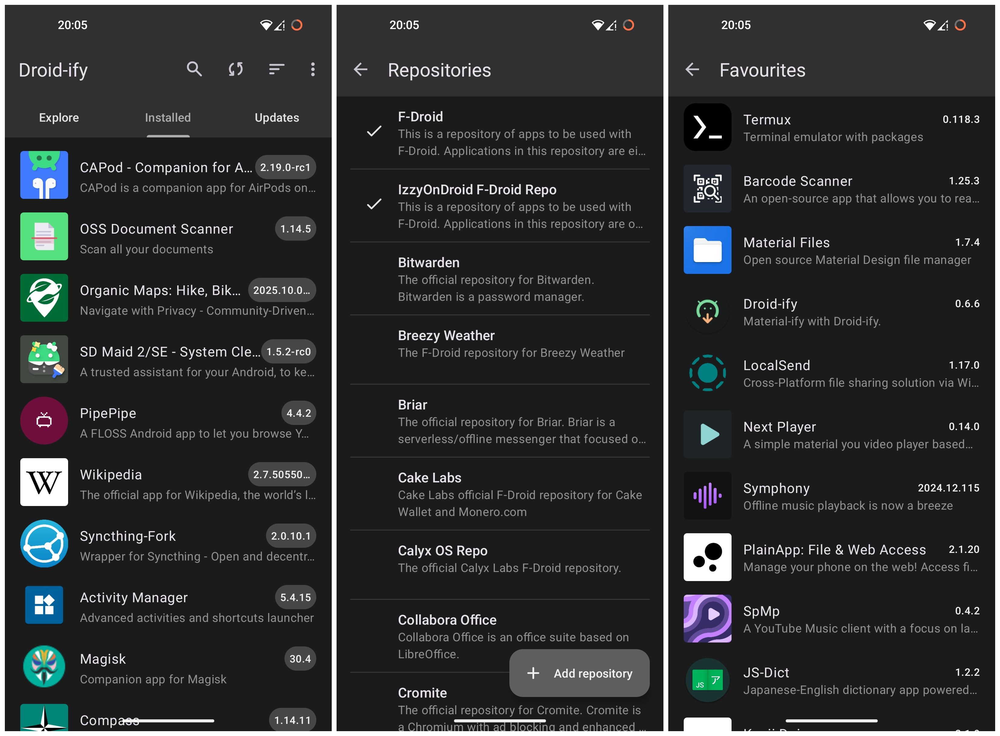
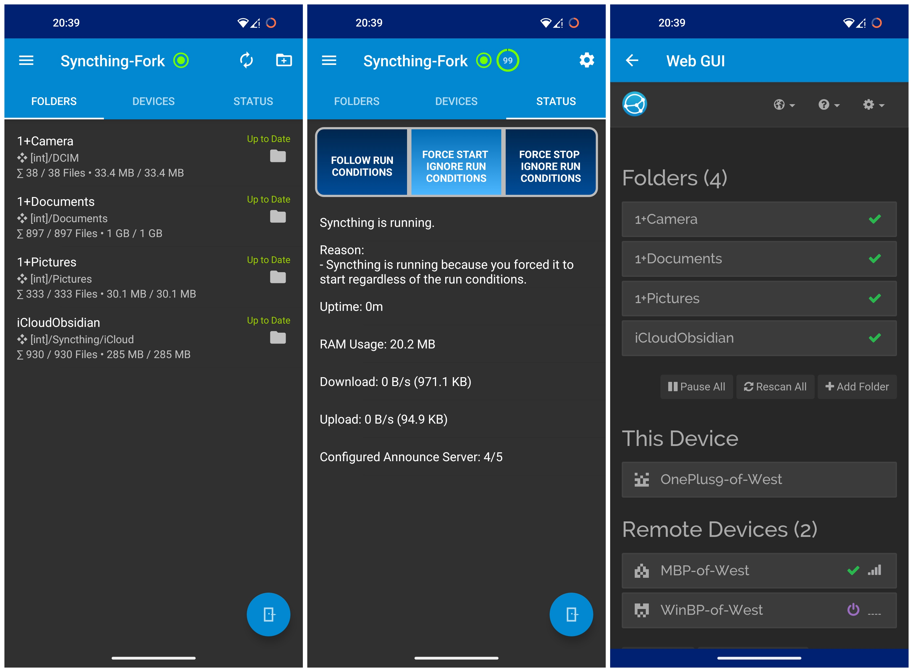
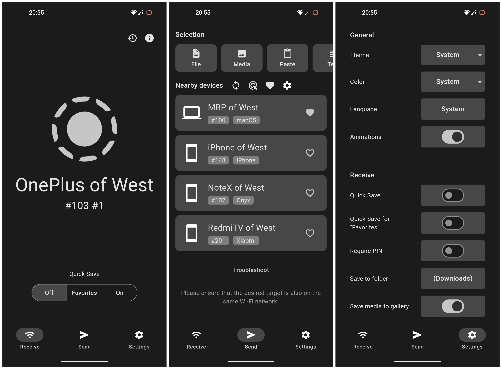
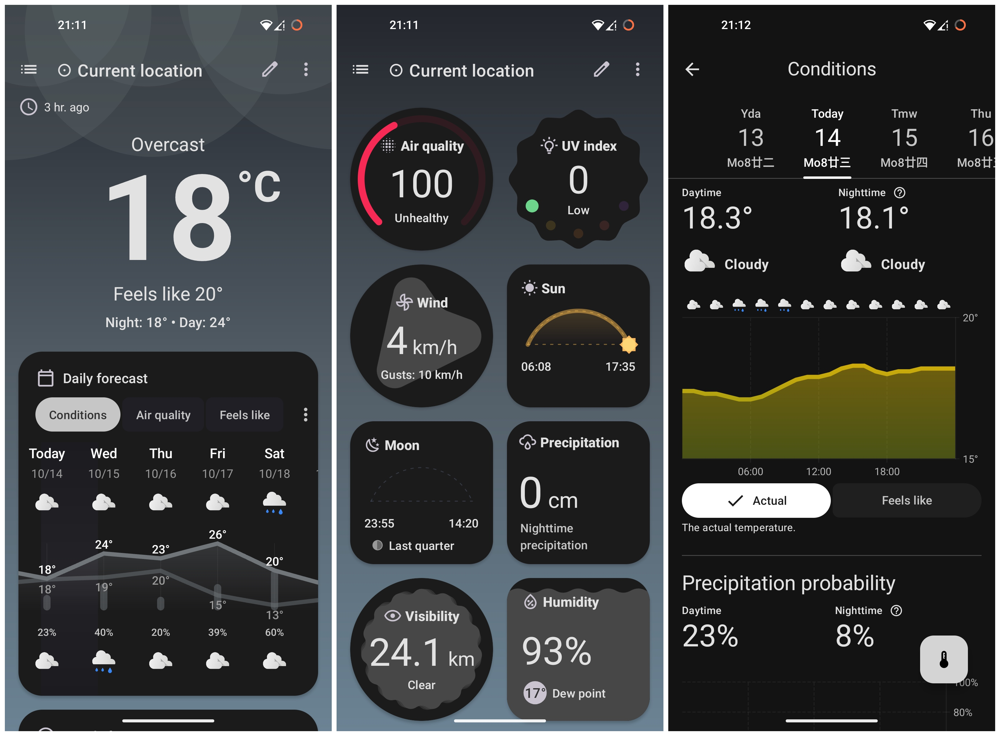
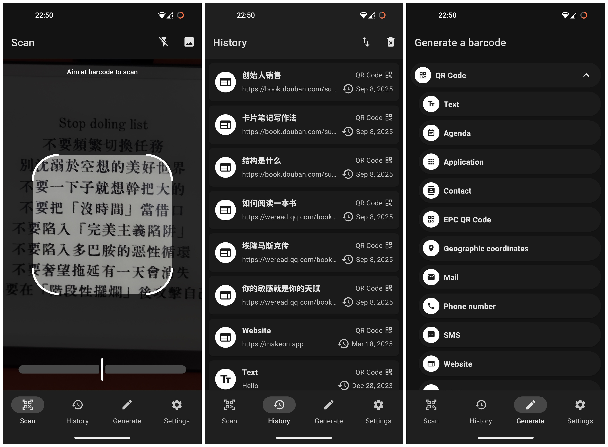
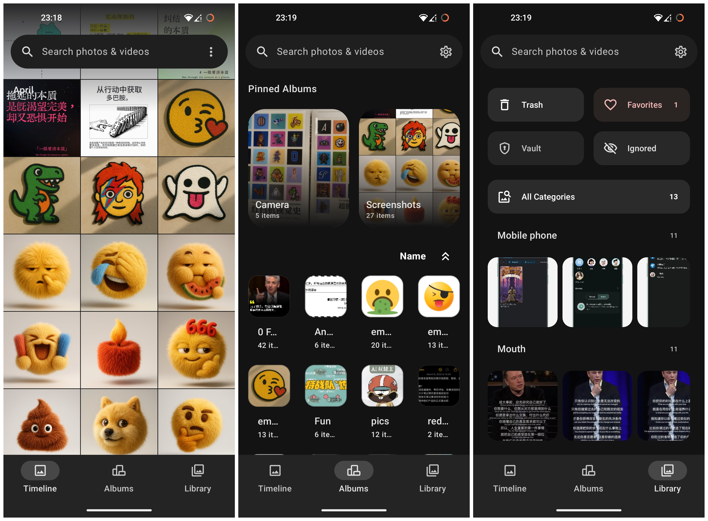
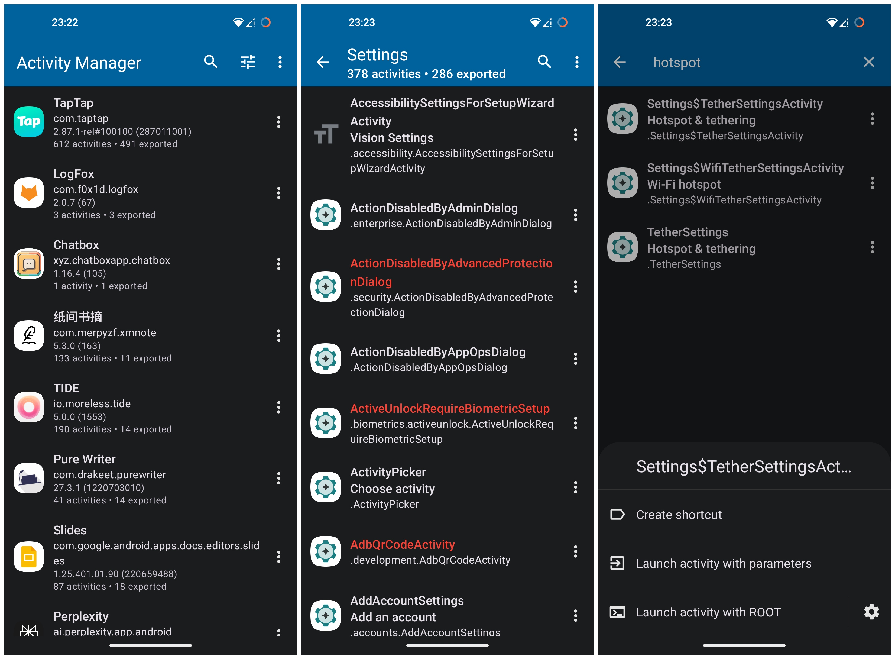
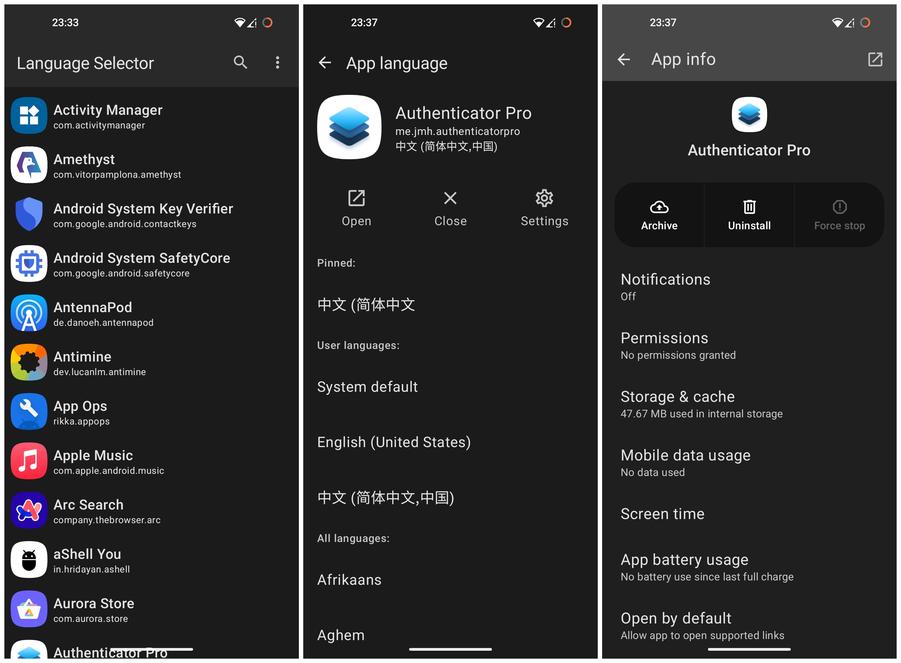
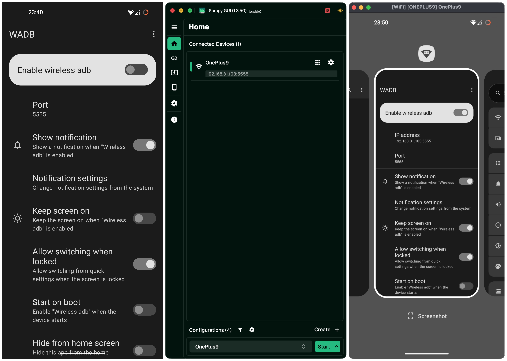

基于 Web 技术栈的跨端开发模版 (Next)
一份代码，三端运行：基于 Web 技术的跨平台应用开发模板
GitHub 仓库：makeonteam/template-next-cross
大家好，今天给大家分享一个我们团队开源的跨平台应用开发模板 —— Template Next Cross。这是一个基于 Next.js、Electron 和 Capacitor 的应用模板，能让你用一套代码同时构建网页、桌面和移动应用。


在线体验
想要直接体验效果？访问我们的 在线演示，感受这个模板的实际运行效果。
为什么要做这个模板？
作为开发者，我们经常面临这样的挑战：需要同时开发多个平台的应用，但维护多套代码库成本高昂。使用 Web 技术构建跨平台应用是一个理想的解决方案，但配置环境、解决平台兼容性问题往往十分耗时。
我们的模板旨在解决这个痛点，让你专注于业务逻辑而非环境配置。
核心特性
- 一套代码，三端运行：Web、桌面（Windows/macOS/Linux）和移动端（iOS/Android）
- 现代化技术栈：Next.js + React + TypeScript + TailwindCSS + Shadcn/ui
- 开发体验优先：集成 Biome 进行代码检查和格式化，开发流程顺畅
- 开箱即用的配置：自带主题切换，解决了移动端安全区域问题
技术实现
- Web 应用：基于 Next.js 构建（启用了 export 参数）
- 桌面应用：使用 Electron 将 Web 应用打包为原生桌面应用
- 移动应用：利用 Capacitor 将 Web 应用打包为原生移动应用
快速上手
- 克隆仓库
git clone git@github.com:makeonteam/template-next-cross.git
cd template-next-cross
- 安装依赖
pnpm install
cd desktop && yarn install
cd ../mobile && yarn install
- 开发运行
# Web 应用
pnpm dev
# 桌面应用
cd desktop && pnpm dev
# 移动应用
pnpm build
cd mobile
npx cap sync
npx cap open android # 或 npx cap open ios
开源贡献
这个项目是完全开源的，我们欢迎任何形式的贡献和反馈。无论是提出新功能建议、报告 bug，还是提交代码改进，都将帮助我们打造更好的跨平台开发工具。
GitHub 仓库：makeonteam/template-next-cross
如果你正在寻找一个高效、现代化的跨平台应用开发方案，不妨试试我们的模板，让你的开发效率提升一个档次！
小王的数字生活：Android 软件推荐

@王瑞青
本文属于 小王的数字生活系列文章
背景
我是一个软件产品经理兼软件设计师。最近在转型为独立开发者。
- 搞机爱好者，平时喜欢研究各种软件
- 有 Apple 全家桶设备和一个一加手机（刷了 LineageOS 23/Android 16），另外有个文石阅读器
软件选品要求
- 尽可能的符合 Google 的设计规范，给用类原生系统的用户优雅的体验
- 开源或免费
- 假如我买了新 Android 手机，会是我优先安装的软件
推荐清单
01 Droid-ify：授人以应用，不如授人以应用库

这是个支持 F-Droid 软件仓库的第三方软件。
- 可以查看 F-Droid 上的 FOSS (Free and Open Source Software) 应用并安装
- 内置其它仓库地址（比如 IzzyOnDroid 仓库），支持自己添加仓库地址；支持导出仓库地址为 json 文件
- 支持在 app 资料详情页点击 ❤️ 图标收藏；支持将收藏的 app 列表导出为 json 文件供其它设备导入
- 详情页点击源代码按钮可跳转到 GitHub，如果是开发人员的话可以看源代码进行借鉴
我个人的一些使用场景举例：
- 闲着没事时，点进详情看看应用介绍，下载后体验体验
- 看看源码项目地址，了解一些 Android 开发的流行技术
- 在我的文石阅读器上导入配置，下载了几个不在官方应用商店内的应用
顺便把我的 json 收藏夹完整 分享 一下。
要安装软件可以 点我 前往下载页面，往下翻有 Download APK 按钮。
02 Syncthing-Fork：局域网同步又快又方便（就是得在家。。。哈哈）

这是局域网文件同步方案 Syncthing 的第三方维护的客户端，因为官方 Android 版本已经停止更新了。
- 我的 Apple 设备是用 iCloud 进行资料备份、文档同步的，之前 Android 一直没找到合适的方案，找了一圈后索性决定：在 Android （一加和文石）上用 Syncthing 同步到我 Mac 设备的 iCloud 的某个路径下，让 iCloud 备份（主用 iCloud 做备份，不用再找 Android 的网盘方案了，可以省点钱）
- 如果需要操作一些 Android 设备上的文件，可以直接在 Mac 上进行，操作/数据会自动同步过去（我之前用 Material Files 操作的）。这个方法不仅不需要 iCloud，而且局域网速度贼快
我个人的一些使用场景举例：
- 把 Android 设备的 /Camera 相机照片路径和 /Pictures 图片路径备份到 Mac
- 方便查看 Android 拍的照片，以及整理从网上（主要是社交媒体软件）下载的图片
- 方便复制文石高亮后导出的笔记图片，然后就可以在 Mac 上直接发朋友圈了
- 把 Android 设备上各种软件的配置文件按每个应用保存到 /Document 文档路径下对应位置，然后同步到 Mac 备份
- 当偶尔用 Mac 要传给 Android 的文件很多时，用 LocalSend 就比较麻烦了。可以使用 Syncthing 同步过去，传完可以直接整理文件夹结构以及重命名（因为在 Android 上重命名有点儿慢）
用过的读者朋友们在评论区留言分享其它使用场景吧。
要安装软件可以 点我 前往下载页面，往下翻有 Download APK 按钮。不过我推荐使用 Droid-ify 下载安装哦。
注：Syncthing 的使用有门槛，请参阅少数派文章。
03 LocalSend：局域网分享，很好用

局域网分享文件利器，支持各个平台。
- 基于局域网分享文件等信息，移动设备开个热点连上也相当于局域网。速度快，节省流量
- 可以分享文件、图片等资源，也可以分享文件夹
- 支持直接分享文字，算是一种 Paste with LocalCloud 了。。。有没有更好的方案？
我个人的一些使用场景举例：
- 我的所有设备，只要能安装的，我都安装了。还有我女朋友的文石阅读器
- 我的 iPhone（没有 Syncthing）要给 OnePlus 传一个大文件，不想用微信或 QQ
- 我的小米电视需要安装别的软件（比如用来看电视的迅雷），我从 mac 上传安装包过去
用过的读者朋友们在评论区留言分享其它使用场景吧。
要安装软件可以 点我 前往下载页面，往下翻有 Download APK 按钮。不过我推荐使用 Droid-ify 下载安装哦。
04 Breezy Weather：给你的 Android 设备配一个和 iOS 天气差不多的应用

iOS 自带的天气简洁优雅，Apple 用户真幸福（哈哈）。我之前使用过小米上移植的天气应用，但是那玩意太果味了，而且更新也没保障，找了一圈后留下了 Breezy Weather。
- 数据丰富度、功能完整度不输 iOS 天气应用：包括小时和多日的预报、空气质量指数 (AQI)、紫外线指数 (UV Index)、其它（体感温度、降水、风向、湿度、能见度、气压、日出日落等）
- 界面简洁、现代化且高度可定制。用户可以根据自己的喜好调整颜色、字体和首页组件排列，甚至可以换桌面小组件的图标风格（如果你喜欢纯色图标的话）；当你晃动手机时，首页背景也会晃动
我个人的一些使用场景举例：
- 和 iOS 使用差不多，用桌面小组件大致看一下最近天气预报
- 和 iOS 使用差不多，查看降雨时间表决定出门要不要带伞（有点儿懒，能不带就不带了）
用过的读者朋友们在评论区留言分享其它使用场景吧。
要安装软件可以 点我 前往下载页面，往下翻有 Download APK 按钮。不过我推荐使用 Droid-ify 下载安装哦。
05 AntennaPod：论关服务，就问你服不服 Google
Google 放弃播客后，我就在寻找一个替代品，最后留下了这个软件。
- 通过内置的搜索功能（支持 Apple Podcast 索引源哦）、直接输入 RSS 订阅链接、OPML 文件导入来添加播客源；可以导出 OPML 备份
- 可以自动下载新剧集（可以全局也可针对单个播客进行设置），可以按条件下载；可以播放后自动移除缓存
- 支持排序、自定义播放列表，支持把喜欢的剧集收藏起来
- 支持跳转时间点，支持跳过静音片段
- 可自定义界面布局
- 有播放数据统计，这个 iOS 没有，但是好像也没啥用吧
我个人的一些使用场景举例：
- 先通过自定义把高频的列表排序
- 自定义底部标签栏为：首页、收件箱、剧集列表（激活收藏列表）、添加、更多
- 自定义首页模块为：继续听列表、订阅列表、下载列表
用过的读者朋友们在评论区留言分享其它使用场景吧。
要安装软件可以 点我 前往下载页面，往下翻有 Download APK 按钮。不过我推荐使用 Droid-ify 下载安装哦。
06 Barcode Scanner：能扫描也能生成二维码、条码

当初想搞个 NFC 卡片来连 Wi-Fi 的，然后发现二维码也能连 Wi-Fi，然后就找到了这个扫描软件。
- 支持扫描多种格式的二维码（QR Code、AZTEC、Data Matrix、PDF 417）和一维条码（EAN 13、EAN 8、UPC A、UPC E、Code 128、Code 93、Code 39、Codabar、ITF），可以选取图片进行识别
- 支持 Open Food Facts、Open Beauty Facts、Open Pet Food Facts、Open Library、MusicBrainz 这几个条码库（不过我没试过）
- 扫描历史记录和管理，可以导出记录为 csv/json
- 可以生成二维码、条码，可以分享
我个人的一些使用场景举例：
- 生成家里 Wi-Fi 的连接二维码，家里来人了直接扫码
- 生成联系人名片二维码（可以从通讯录直接选择），把个人名片分享给好朋友
- 网址变二维码（也可以用草料二维码）
用过的读者朋友们在评论区留言分享其它使用场景吧。
要安装软件可以 点我 前往下载页面，往下翻有 Download APK 按钮。不过我推荐使用 Droid-ify 下载安装哦。
07 Gallery：就是简单清爽，用来代替默认图库

LineageOS 内置的的没这个好看（其实很多默认应用都很土，细节做得不好）。图片流滚动时是沉浸式的。
- 查看照片列表：按时间线、按相册（可以把重要的相册 pin 住）
- 有本地分类功能，离线扫描你的相册后自动分类
- 可以忽略某些图片或相册、可以把某些图片放入私密相册中
- 简单够用的编辑功能：裁剪旋转、参数调整、风格选择、标记涂鸦
我个人的一些使用场景举例：
- 把下载或截屏的图片裁剪一下后保存副本，然后发动态
- 和 Syncthing 配合使用，把新下载的图片移动到别处存档，只保留我需要多次查看的图片
用过的读者朋友们在评论区留言分享其它使用场景吧。
要安装软件可以 点我 前往下载页面，往下翻有 Download APK 按钮。不过我推荐使用 Droid-ify 下载安装哦。
08 Activity Manager：一键直达目标页面

一个跳过点击流程，直达某一个功能页面的插件软件。也可以用来查看应用的所有 activity 活动。
- 查看某个应用有哪些 activity，然后选择某 activity 后可以：
- 创建桌面快捷方式
- 带参数启动
- 用 root 模式启动
我个人的一些使用场景举例：
- LineageOS 开启蓝牙热点不方便，所以我创建了热点页面的快捷方式：可以开启蓝牙热点、Wi-Fi 热点
- 之前 Google Gemini 在桌面没有图标，我创建了快捷方式（现在有图标了）
用过的读者朋友们在评论区留言分享其它使用场景吧。
要安装软件可以 点我 前往下载页面，往下翻有 Download APK 按钮。不过我推荐使用 Droid-ify 下载安装哦。
09 Language Selector：为应用设置独立的界面语言

iOS 16 支持单独设置某应用的默认语言，在 Android 我用这个软件做同样的事。LineageOS 自带的不是所有应用都可以设置，所以我还是保留了这个应用。
- 查看或搜索应用后选择默认显示的语言
我个人的一些使用场景举例：
- 我的系统是英文的，有些情况下想单独设置应用的语言
- 虽然我能使用英文版的软件，但是体验新应用的时候设置为母语使用起来会更快
- 游戏设置为母语更方便游玩（除非翻译的不好）；游戏的语言设置界面各不相同，我喜欢直接在这个软件里设置，操作流程更统一
- 作为产品经理/设计师，偶尔想看一个软件在另一个语言下是什么表现
用过的读者朋友们在评论区留言分享其它使用场景吧。
要安装软件可以 点我 前往下载页面，往下翻有 Download APK 按钮。不过我推荐使用 Droid-ify 下载安装哦。
10 WADB：配合 scrcpy 实现 Android Mirroring/安卓镜像

在 Mac 上 安装 scrcpy 可以让安卓手机实现类似 Apple 的 iPhone Mirroring 功能，WADB 是用于开启 Wi-Fi 下的 ADB 连接的，这样就可以不需要连接数据线啦。ADB 的功能还是很强大的，有了 Wi-Fi 连接方式，方便很多。
- 开启无线 ADB 后，获取 IP 地址和端口号。一般网络不变，这个是不变的
- 可以设置保持屏幕常亮，这个是和 iPhone Mirroring 的逻辑不一样的
如何安装 scrcpy 并启动：
- 用命令行安装
brew install scrcpy - 在 WADB 界面顶部点击开启按钮，查看 IP 地址和 Port 端口号；在命令行输入
adb connect IP:Port然后确认是否连接，可能需要一些授权确认 - 在命令行输入
scrcpy --stay-awake --turn-screen-off即可开始镜像，Android 会黑屏 - 如果你用 Warp 终端，以上俩个命令可保存起来
用起来还不是太满意，因为要用命令行，之前在网上找了 scrcpy 某个有 UI 的版本，但是那个 UI 不符合我的要求，功能操作条只能放右边，不能隐藏 ⇒ 不美，遂作罢。
后来最后终于还是让我找到了一个美观清爽的 UI 版本，那就是 Flutter-ScrcpyGUI，点我 下载。
用过的读者朋友们在评论区留言分享其它使用场景吧。
要安装软件可以 点我 前往下载页面，往下翻有 Download APK 按钮。不过我推荐使用 Droid-ify 下载安装哦。
Copyright © 2015 Powered by MWeb, Theme used GitHub CSS.